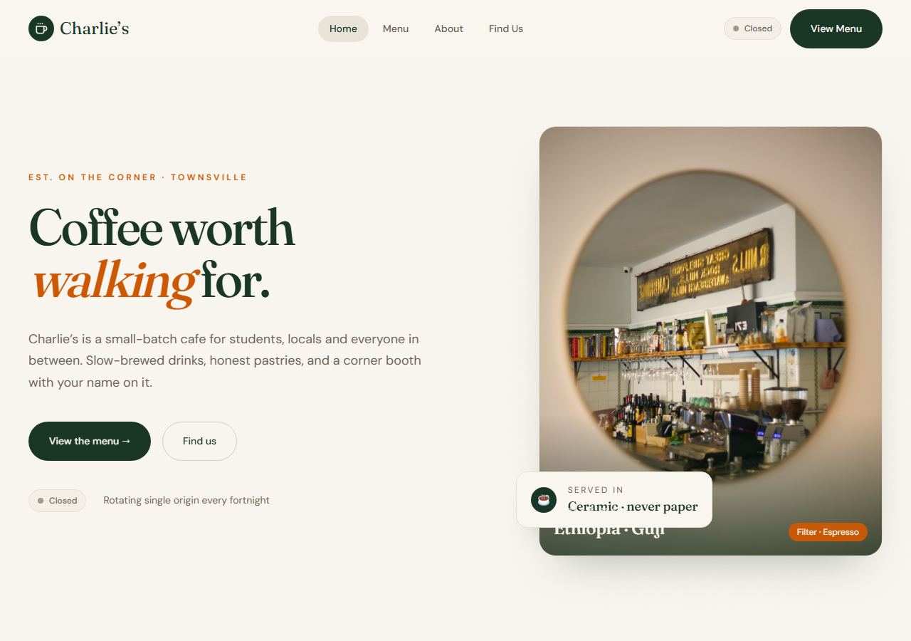
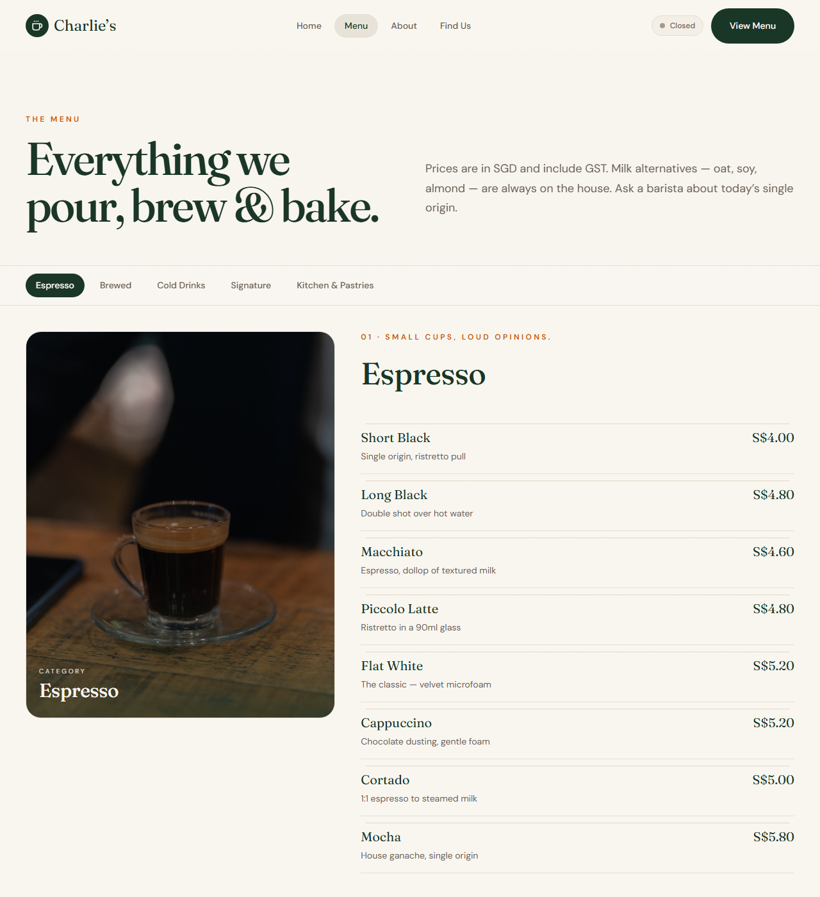
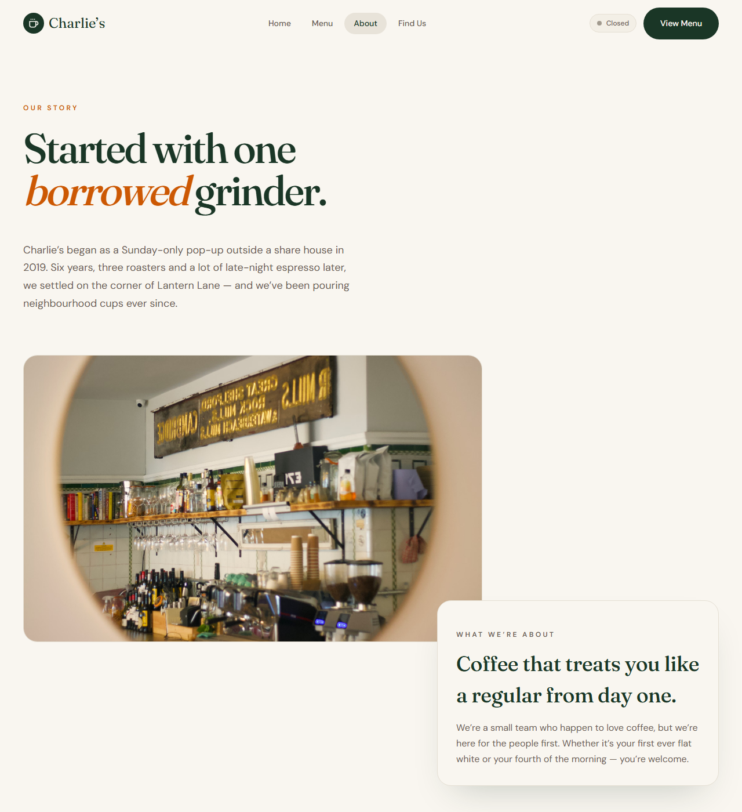
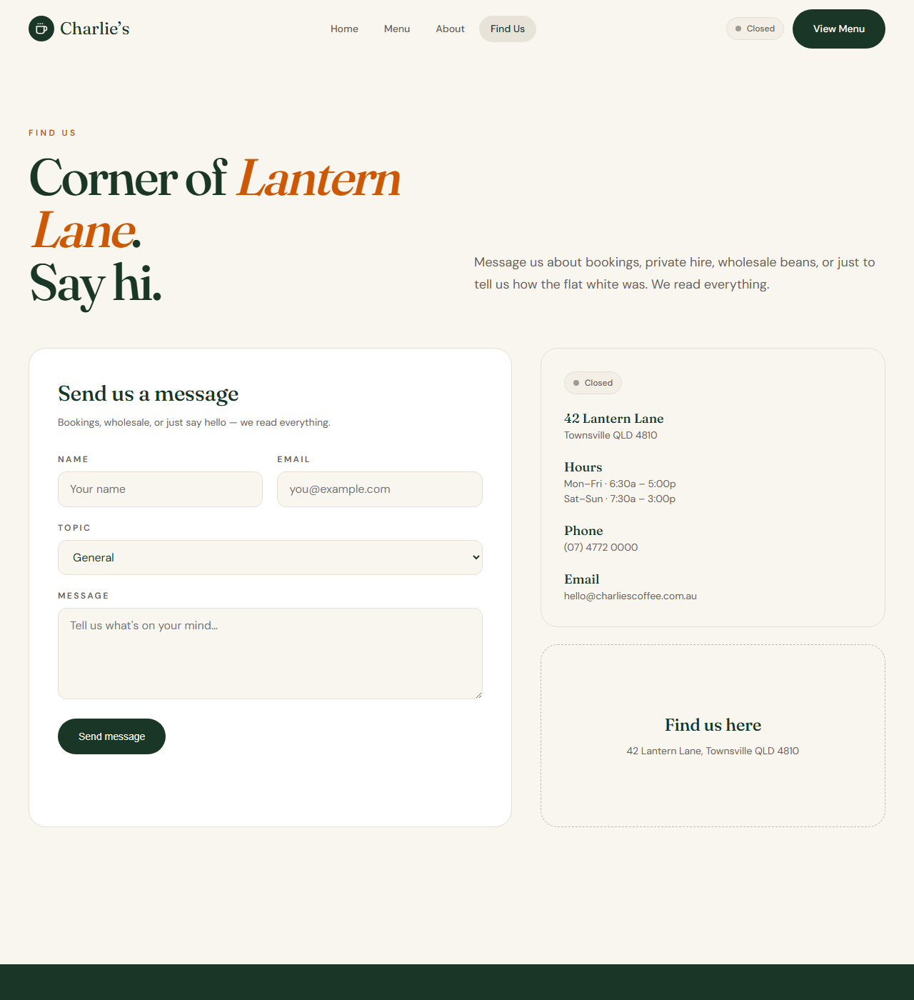

What this shows
This page documents a real, working local install of the Charlie's Coffee WordPress theme — the same theme code that runs on staging and production, running independently on a developer's own machine. It was set up, verified, and screenshotted directly from a running instance — not mocked up.
Any teammate can reproduce this — see deployment.md for the one-time WordPress setup steps (activate theme, create pages, assign templates, set permalinks). This doesn't require InfinityFree or any hosting account at all — it's fully self-contained on one machine.
Verified working pages

Home —
front-page.php, hero, featured drinks, category links.
Menu — full category breakdown with prices, rendered from the Menu page template.

About — the About page template.

Contact — the Contact page template, including the working contact form.
What this proves
- The theme is a genuine, portable WordPress theme — it installs and runs on a completely independent WordPress instance, not just the two specific InfinityFree accounts it happens to be deployed to.
- Local, staging, and production are all confirmed working with the same theme code, satisfying the Publishing criterion's requirement for all three environments.
- Setup is fast and reproducible for any new developer joining the project (see deployment.md).